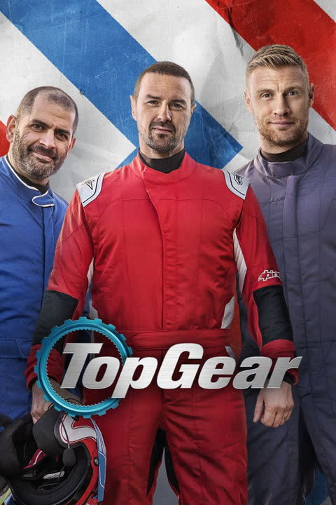
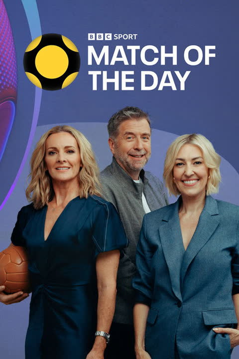
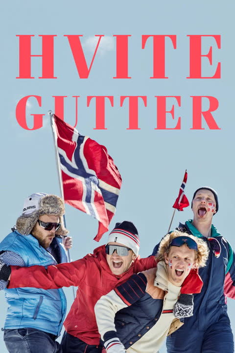
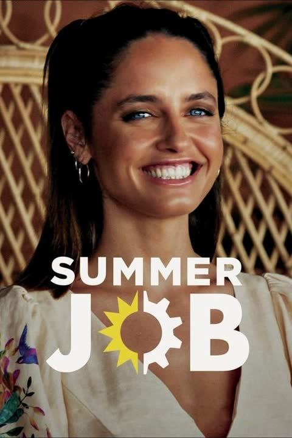

Brands & platforms
Netflix
adidas
FIFAWorld Cup 2022
BBC
sky
Disney+
TikTok
HBOmax
64
Broadcasters & platforms24 countriesTV · streaming · radio
Top 5
Keyvitup · 2026New K-pop boy groupArtist project




Heard inTop Gear · DynastyMatch of the Day & more